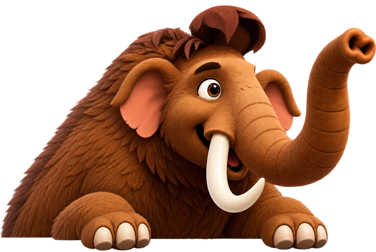
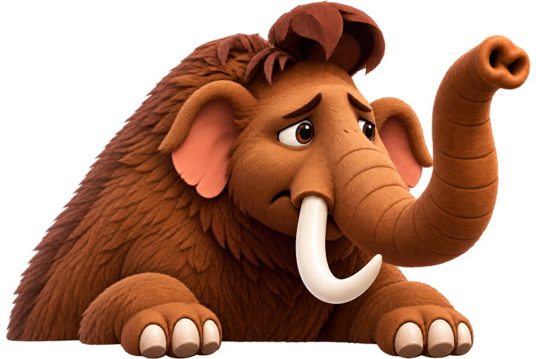

{{ zoneAName }}
{{ zoneASub }}
{{ zoneBName }}
{{ zoneBSub }}
{{ p.n }}
{{ c.badge }}
{{ c.chip }}
{{ c.mark }}
{{ t.text }}
{{ o.text }}
{{ d.label }}
{{ m.text }}
Open
Closed
{{ p.text }}
{{ n.caption }}
–
{{ n.value }}
+
{{ checkLabel }}
{{ checkLabel }}

{{ f.t }}

↻
{{ muteIcon }}
{{ progress }}